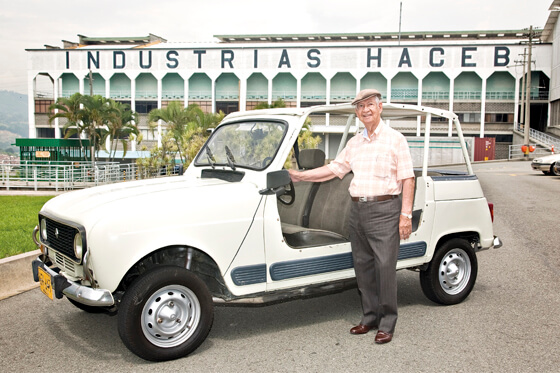

José María Acevedo
El hombre detras de industrias Haceb

El empresario Jose Maria Acevedo se dedico desde su adolescencia a manipular instalaciones electricas lo que poco a poco lo llevo a ser el dueño de las industrias Haceb.
Aqui un resumen de la trayectoria de su vida
- 1919 - nace en Medellin, Antioquia, en el barrio El Salvador
- 1934 - empieza a trabajar como mensajero en un almacen electrico, en sus ratos libres aprendía de reparaciones. el técnico enferma y consigue reemplazarlo.
- 1940 - abre su propio negocio de reparaciones en un garaje en el centro de la ciudad llamado el Taller electrico de Medellin. empieza a desarrollar sus propios electrodomesticos.
- 1941 - fabrica una parrilla electrica sencilla, reemplazando el metodo de la leña, lo llama Jacev.
- 1943 - Luego de su éxito con las parrillas, se dedicó a aprender de manera autodidacta el funcionamiento de otros aparatos y produce sus propias lámparas fluorescentes, calentadores de agua (tinas), resistencias y demás artículos relacionados con electricidad y metales.
- 1960 - A partir de sus creaciones que son comparadas con productos Estadounidenses, designa a sus hermanos los cargos administrativos.
- 1966 - Industrias Haceb S.A. crea su primera nevera y se convierte en uno de sus productos insignia.
- 2017 - Industrias Haceb S.A. es ahora una multinacional que diseña, fabrica y exporta electrodomésticos a 15 países. Haceb reportó el año pasado ingresos por $657.140 millones y actualmente es responsable del 50 % de la línea blanca que se produce en el país.
- 2018 - José Maria Acevedo recibe título honoris causa en ingeniería de productividad y calidad del Politécnico Colombiano Jaime Isaza Cadavid
“hay muchas jugadas y muchas posibilidades. Tener agilidad y saber cómo se mueven las cosas es
importante. Además, me enseñó que uno siempre se tiene que preguntar frente a una situación qué harían
los otros. El ajedrez nos enseña a pensar para poder dar los pasos estratégicos y siempre me pregunto:
¿cuál es la mejor jugada que puedo hacer en este tablero?”.
--Jose Maria acevedo.